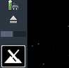
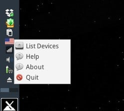
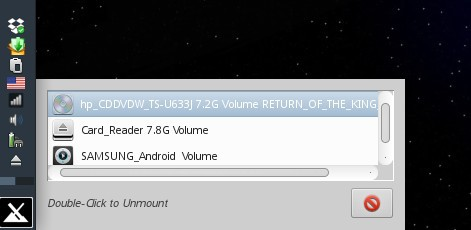

A tool that resides in the system tray / notificiation area that allows for easy unmounting of usb devices as well as optical discs. USB Storage, MTP devices, and GPHOTO2 devices are supported. Optical disc drives are also supported.
The system tray icon is a standard “eject” symbol (actual icon varies with system icon theme).
Right clicking the icon will bring up a context menu.
List Devices: Brings up the unmounter action window.
Help: This help document.
About: standard “About” information including version number.
Quit: Exit the app.
Left clicking the icon will also bring up the unmounter action window.
Double Left Click and entry to unmount. Notifications will inform of success or failure.
To close the action window, simply click outside the window, press ESC, or click the Cancel Button.
Tip: Hover over an entry to see actual mountpoint information.
Development history: Dolphin_Oracle
v. 20170127